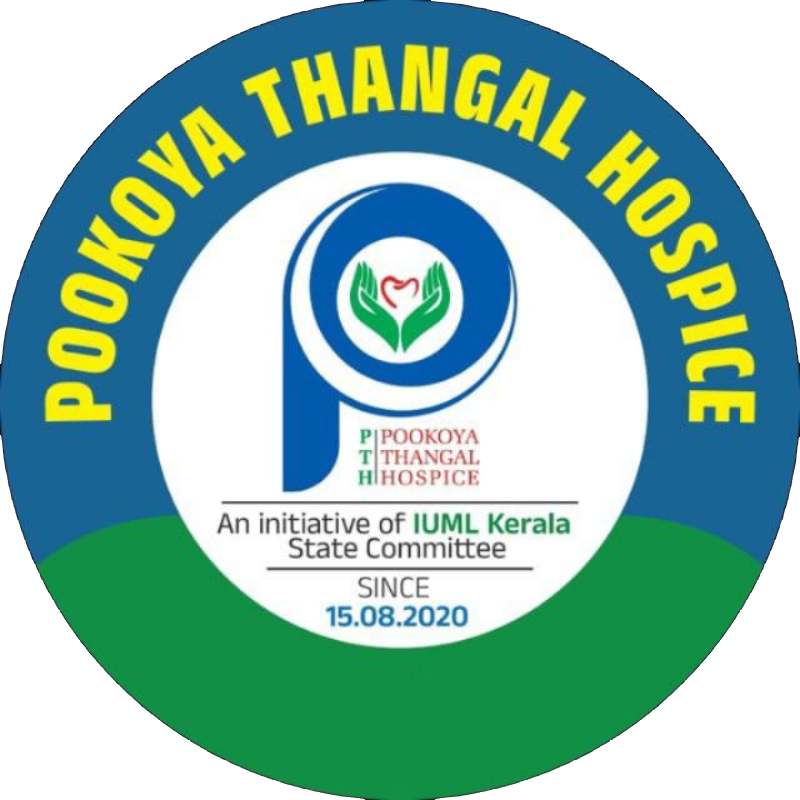

Nirvrithi
Charitable Trust
"Supporting dignity, comfort, and care when it matters most."
We believe every patient deserves access to essential care. Through the Pookoya Thangal Hospice, we make palliative care medical equipment available to patients and families who need it — bringing comfort and support directly to your home.
Care With Dignity, Closer to Home
Nirvrithi Charitable Trust (Reg. No: ALP-58/2026) is a charitable organisation based in Mannancherry, Alapuzha, Kerala. We are committed to supporting patients and families navigating the challenges of serious illness through compassionate community action.
Through our initiative — Pookoya Thangal Hospice (PTH) — we make palliative care medical equipment freely available on a loan basis to patients who need it at home. From hospital beds and wheelchairs to oxygen concentrators and air mattresses, we help make home-based care dignified and manageable.
Free Medical Equipment Lending
Essential palliative care equipment available to patients at no cost.
Community-Led Care
Run by volunteers and community members dedicated to compassionate service.
Home-Based Palliative Support
Enabling patients to receive dignified care from the comfort of their homes.

Medical Equipment Available for Care
We facilitate access to a range of medical equipment used in palliative care. Equipment is available on a free loan basis. Check availability below.
News & Events
Stay informed about our programmes, community activities, and announcements from Nirvrithi Charitable Trust and Pookoya Thangal Hospice.
Gallery
A glimpse into the work of our community — events, equipment donations, awareness programmes, and moments of care.
Help Us Continue
the Work
Your support helps us maintain and expand our equipment inventory, enabling more patients and families in need to access palliative care tools at home. Every contribution — large or small — directly supports the dignity and comfort of those in our community who need it most.
Your donation helps provide:
Bank Transfer
UPI Payment
For equipment donations or in-kind support, please contact us directly.
Contact Us
Whether you need equipment, wish to donate, or want to volunteer — we're here to help. Reach out to Nirvrithi Charitable Trust or Pookoya Thangal Hospice.
Address
Chiyamveli,
Building No. 142.E,
Mannancerry PO, Alappuzha,
Kerala, PIN: 688538
Contact Hours
Monday - Saturday 9:00AM - 4:00PM
Pookoya Thangal Hospice
Mannancherry, Alapuzha